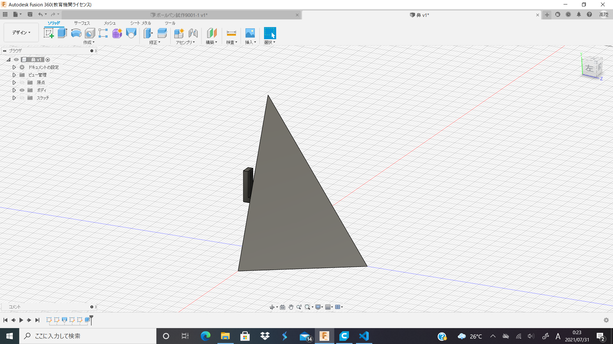
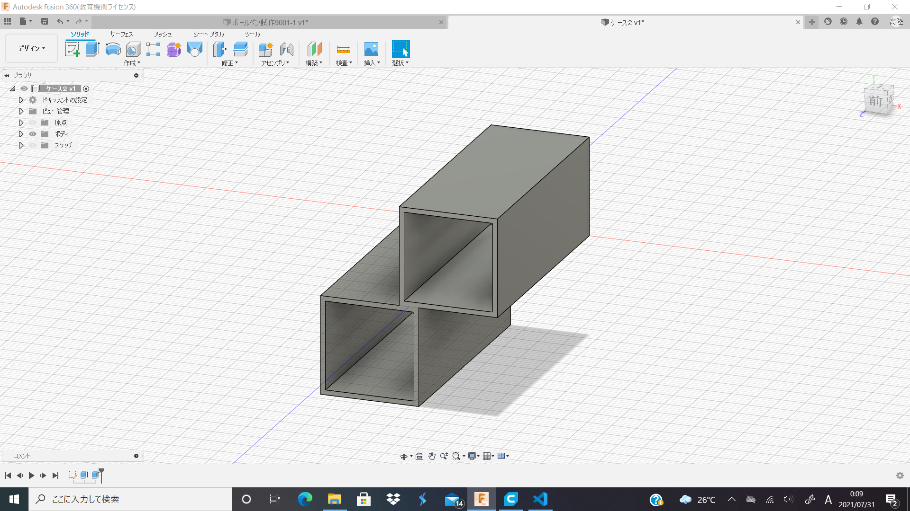
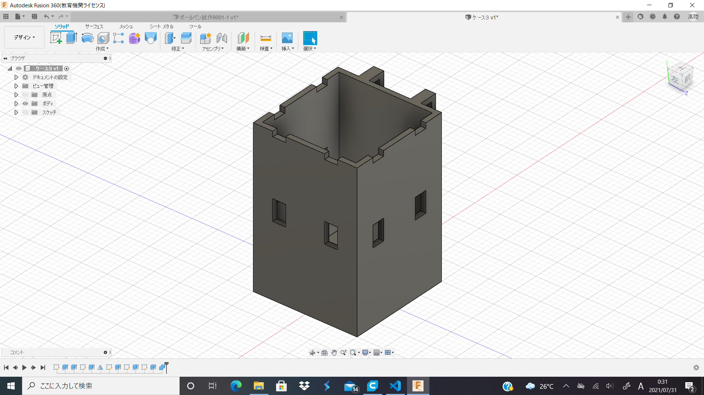
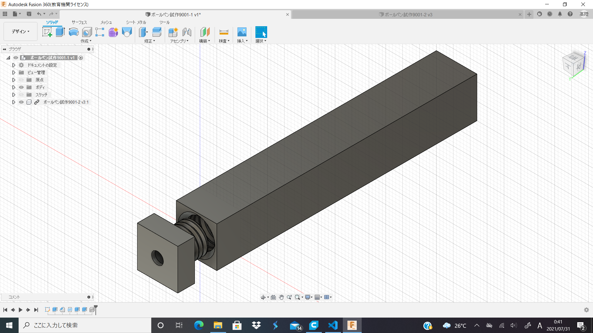

これまでのDOP
眼鏡置きの分野が終わりそうだ。今後は新しい分野をデザインしていく。なおテストや課題が重なったため成果物はあまりない。
1
眼鏡置きの最終形。実際の使用条件に近いものを作れば展示性も出てくると思い鼻をモチーフに作成した。後ろの引っかかりが眼鏡がずり落ちるのを防ぎ、使用感は安定している。
評価はあまり良くはなかった。

こちらも完全にデザイン先行型。「四角が連なった棚は横にし、ずらすとオシャレ」のような記事を読み、それを1個単位で切り抜き、つなげられるようにしたら面白いのでは？という安直な考えで製作した。
特に凝ったデザインはしていないため、スムーズに印刷できた。こちらのデザインの評判は思ったよりよく、今後のデザインの心柱になりそうだ。
2

完全に迷走。何を作ったらいいのかが全然わからず、「つけられる機能は付けとけ」精神で作ったモノ。フックを使用することで自分好みに組み換えられる。
デザインも全然だめ。しかし、先生からの助言をいただき、半歩くらいは前進したと思う。いや、やっぱりしてない。
3

テストなど全てが終わり、製作を再開したときに作ったモノ。机上のモノを作るうえでボールペンを必須だと考えたためボールペンを製作した。ねじなどの径を微調整し、なんとか形になったと思いミーテイング当日プリントした。
しかし径があっていない箇所があり、替え芯がシュカシュカしてしまうようなボールペンになった。一応書くことはできる。
今後の展望
ミーテイングで四角を多用した「解像度の低い世界」を作ることになったので、それを作る。8月中に二桁は実使用できるものを作りたい。